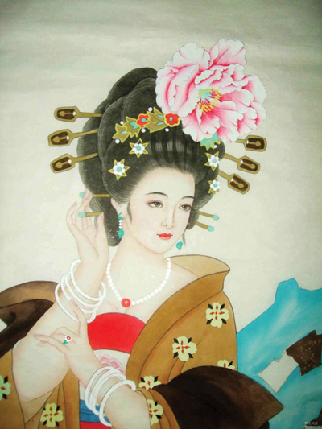

Vua Đường Huyền Tôn, cũng gọi là Đường Minh Hoàng (người Tàu và người Âu châu gọi là T’ang Hiuan Tsong, 713-756 sau J.C) ngồi trước lầu Trầm Hương thấy mấy khóm hoa mẫu đơn lấy giống từ Giang Nam về trồng trong vườn Nam Uyển có bốn màu, đỏ thẩm, đỏ tươi, hồng, trắng, đều nở hết một lượt đẹp quá. Vua liền cho mời Dương Quý Phi (Tàu và người Âu châu gọi là Yang Kouei Pei), và mở tiệc vui mừng để cùng người yêu uống rượu xem hoa. Ban nhạc của Vua trổi khúc du dương để chầu vua và Quý Phi. Nhưng Huyền Tôn bảo: “Thưởng hoa mẫu đơn mà nghe nhạc của các người thì nhàm tai của Quý Phi. Hãy lập tức đi triệu quan Hàn Lâm Lý Thái Bạch đến đây làm thơ để ngâm cho Quý Phi của ta nghe! Mau lên! Nhạc trưởng Quý Niên cùng mấy người lính hầu vội vàng chạy đến nhà thi sĩ Lý Bạch, nhưng không có ông ở nhà. Đi tìm khắp kinh đô Tràng An, có người bảo thấy quan Hàn lâm đang ngồi trong một tiệm rượu. Quý Niên chạy tới nơi thì thi sĩ họ Lý say li bì, đang nằm ngủ trong quán. Mấy người lay gọi mãi ông không dậy. Không biết làm sao, vì Vua bảo đi gọi Lý Bạch đến thì làm thế nào cũng phải đưa Lý Bạch vào chầu Vua, nếu không thì có tội, hai người lính phải khiêng ông lên lưng ngựa và quất ngựa chạy về lầu Trầm Hương. Vua bảo đặt Lý Bạch nằm trên chiếc hoa ngay trước thềm, nơi Vua và Dương Quý Phi đang ngồi uống rượu. Thi sĩ họ Lý vẫn ngủ như chết, ngáy khò khò, sặc mùi rượu. Quý Phi tâu: “Thần thiếp nghe người ta nói rằng lấy nước lạnh đắp lên mặt người say rượu là tỉnh ngay”. Vua Huyền Tôn liền truyền cung nữ làm theo lời của Quý Phi. Một lát, Lý Bạch tỉnh rượu, lóp ngóp ngồi dậy. Trông thấy vua, ông quỳ xuống tâu. “ Kẻ hạ thần thật đáng tội, cúi xin Bệ hạ rộng lượng dung tha”. Vua bảo: “Hôm nay Trẫm cùng Quý Phi ngắm hoa mẫu đơn, vậy khanh làm bài thơ để phổ nhạc cho Quý Phi nghe”. Lý Bạch cầm bút thảo luôn một hơi ba bài thơ, chữ đẹp như rồng bay, phượng múa, đề là “Thanh Bình tam chương” dâng lên vua ngự lãm. Vua đưa Quý Phi ngâm:
I
Vân tưởng y thường, hoa tưởng dung,
Xuân phong phất hạm lộ hoa nùng.
Nhược phi Quần ngọc sơn đầu kiến.
Hội hướng diêu đài nguyện hạ phùng.
II
Nhất chi nùng diệm lộ ngưng hương,
Vân vũ Vu sơn uổng đoạn trường.
Tá vấn Hán cung thùy đắc tự,
Khả liên phi yến ỷ tân trang.
III
Danh hoa khuynh quốc lưỡng tương hoan.
Thường đắc quân vương đới tiêu khan.
Giải thích xuân phong vô hạn hận.
Trầm hương đình bắc ỷ lan can.
Xin tạm dịch:
I
Áo tợ làn mây, mặt tợ hoa,
Ngoài hiên gió thoảng giọt sương sa.
Phải người đã hiện nơi Quần ngọc.
Hay khách Diên đài bóng nguyệt nga!
II
Sương đượm cành tươi bát ngát thơm,
Ngẫm ngùi thần nữ chốn Vu sơn!
Xót xa Phi yến trong cung Hán.
Thử hỏi bằng ai chút phấn son?
III
Hương trời sắc nước khéo hòa hai,
Cười mím, quân vương ngắm nghía hoài.
Đừng dựa hiên Trần hình dáng ngọc,
Gió xuân tiêu tán hận trần ai!

Dương Quý Phi và vua Huyền Tôn cùng nhau khen ngợi thi tài của quan Hàn Lâm Lý Bạch và vua truyền lệnh cho ban nhạc phổ nhạc ngay cả ba bài Thanh Bình để Quý Phi nghe. Quý Phi phục tài của Lý Bạch, liền rót một ly rượu bồ đào đưa tận tay tặng thưởng thi nhân.
Nhưng Quý Phi là ai, mà được vị Đại Hoàng đế của nhà Đường sủng ái, chiều chuộng đến như thế? Nàng đẹp như thế nào đến đỗi một bậc Thi Bá nổi danh khắp thiên hạ cũng phải tuân lịnh Vua, mà làm thơ ca ngợi nàng?
Chúng tôi hãy tìm xem lý lịch của kẻ giai nhân lừng lẫy tiếng tăm này và ảnh hưởng cùa nàng đối với vua Huyền Tôn và cả Triều đại nhà Đường tai hại như thế nào.
Nụ cười hoa nở hơn xưa
Sáu cung son phấn đều thua mặt nàng…
Bạch cư dị
(Thi sĩ đời Đường)
Có một sự kiện không tốt tý nào mà vài quyển sách Sử của Tàu không nói đến hoặc nói sai lạc rằng Dương Quý Phi đang ở nhà với chú ruột, và mặc áo đạo sĩ, thì được tiến cử vào làm cung phi, gần một năm sau nhà Vua mới tôn lên ngôi Hoàng Hậu. Sự thật thì Dương Quý Phi, tên thật là Thái Châu, đã là vợ của Thọ Mạo Vương, một trong những Hoàng tử con của Vua.
Thái Châu ở với Thọ Mạo Vương gần được một năm, rồi vua Huyền Tôn trông thấy nàng đẹp quá, mới cướp nàng dâu về làm Cung phi, và đày Thọ Mạo Vương đi xa.
Cha nàng là Dương Huyền Diệm, làm một chức quan nhỏ ở Thục châu. Nàng mồ côi từ thuơ còn bé, ở làm con nuôi cho người chú là Dương Huyền Kiều cũng làm quan ở Hà Nam. Nhờ sắc đẹp và trí óc thông minh, nàng có học khá, biết làm thơ, đánh đàn, nàng được Thọ Mạo Vương, con của Vua Đường Huyền Tôn cưới về làm vợ. Lúc bấy giờ Vua Huyền Tôn đang yêu chuộng nhất là nàng Võ Huệ Phi. Vì nàng mà vua truất phế Hoàng Hậu, để đưa nàng lên thay thế. Đến năm thứ 24, Huệ Phi chết, nhà vua thương tiếc vô cùng, trong đó trên 3000 cung phi chẳng có cô nào được lọt vào long nhãn cả. Một hôm vừa
thiếu trang 129 - 144
Chàng đi rảo một vòng để xem cảnh tượng kinh hoàng bi thảm ấy.
Bỗng dung, chàng nhìn thấy Dương Quý Phi, vội vàng cúi xuống ôm lấy người ngọc. Chàng kêu lên:
- Dương Quý Phi!.. Dương Quý Phi!... Dương Quý Phi!...
Xác giai nhân đã lạnh ngắt như băng giá. Nhưng khi An Lộc Sơn kề mũi trên đôi má của nàng còn hơi ưng ửng một chút màu hồng, chàng còn nghe một hơi thở yếu ớt. Chàng vui mừng gọi to lên:
- Dương Quý Phi!.. Dương Quý Phi!... Dương Quý Phi!...
Người ngọc còn hé mắt được một chút xíu, đôi mắt đã đục ngầu, rồi nhắm riết lại. Nàng đã hoàn toàn tắt thở.
An Lộc Sơn ôm xác chết của Dương Quý Phi, khóc nức nở…
Theo dương lịch, hôm đó là ngày 18 tháng 7 năm 756. Chiếu theo sử Việt Nam ta thì vào khoảng 30 năm sau vua Mai Hắc Đế, dưới thời Bắc thuộc thứ ba, “An Nam đô hộ phủ”.
Vua Huyền Tôn di cư sang đất Thục, sau đó con Vua là Tức Tôn khôi phục lại được sơn hà. An Lộc Sơn bị con là Khánh Tự giết, một bộ tướng là Sử tử Minh lại giết Khánh Tự mà quy hàng nhà Đường.
Vua Đường Huyền Tôn trở về Kinh đô cũ, Tràng An. Nhớ Dương Quý Phi quá, ngày đêm không ăn không ngủ được, nhà Vua bèn sai họa sĩ vẽ lại hình Dương Quý Phi để treo trong cung điện. Sớm, tối, nhà Vua chỉ ngồi nhìn hình người yêu mà khóc sướt mướt, không còn gì an ủi được nữa mối hận nghìn thu ấy.
Thi sĩ Bạch cư Dị, đời Đường, có làm bài “Trường Hận Ca” thương xót cuộc tình duyên đau đớn của Đường Huyền Tôn, và có lẽ của cả An Lộc Sơn:
Thiên trường, địa cửu, hữu thời tận,
Thử hận miên miên vô tuyệt kỳ!
………………
(Trời tan, đất vỡ có ngày.
Muôn đời, muôn kiếp, hận này, khôn nguôi!)